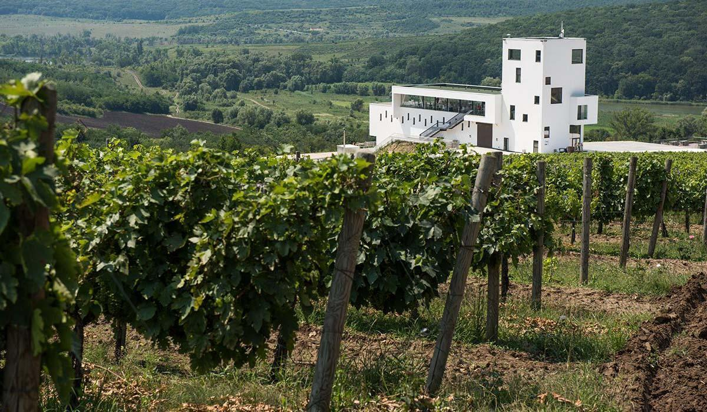

Vinăria Poiana – Între coline roditoare și păduri răcoroase
Agropensiune turistică modernă și confortabilă, cu 5 camere. Camerele sunt echipate cu paturi de 2 locuri. Ferestrele panoramice oferă lumină naturală din abundență și vedere frumoasă către impresionantul tablou care descrie zona vinăriei ca într-o frescă rurală.